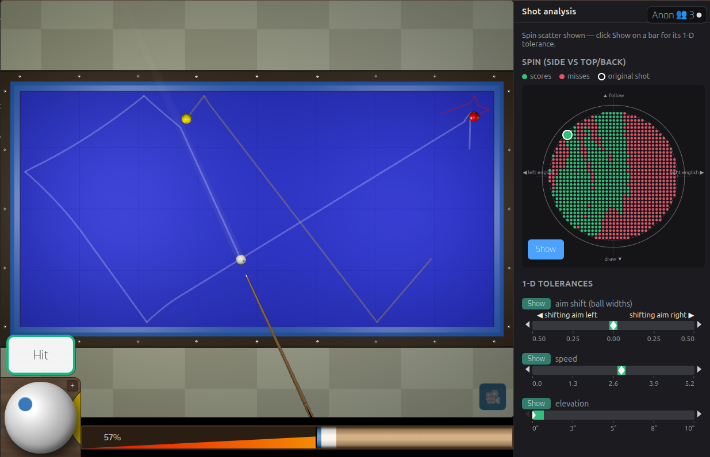
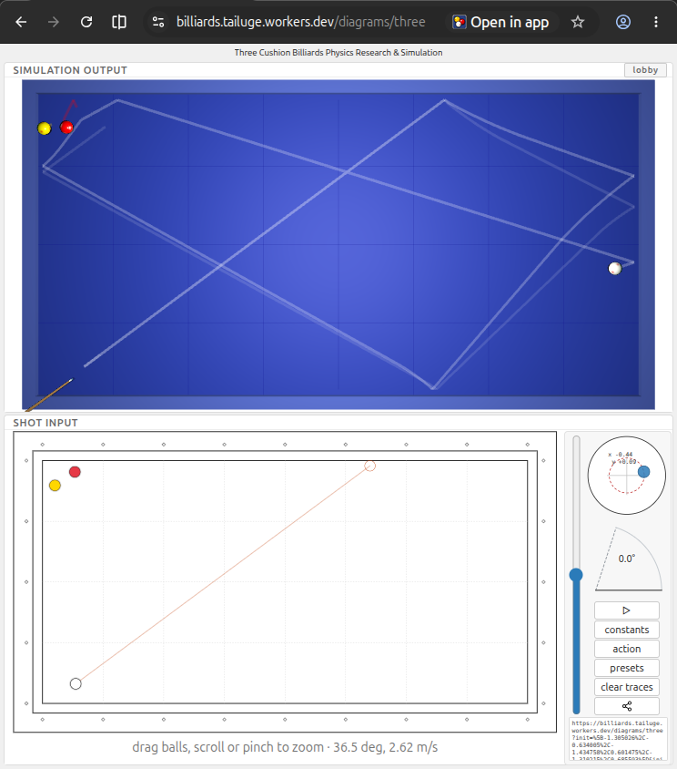
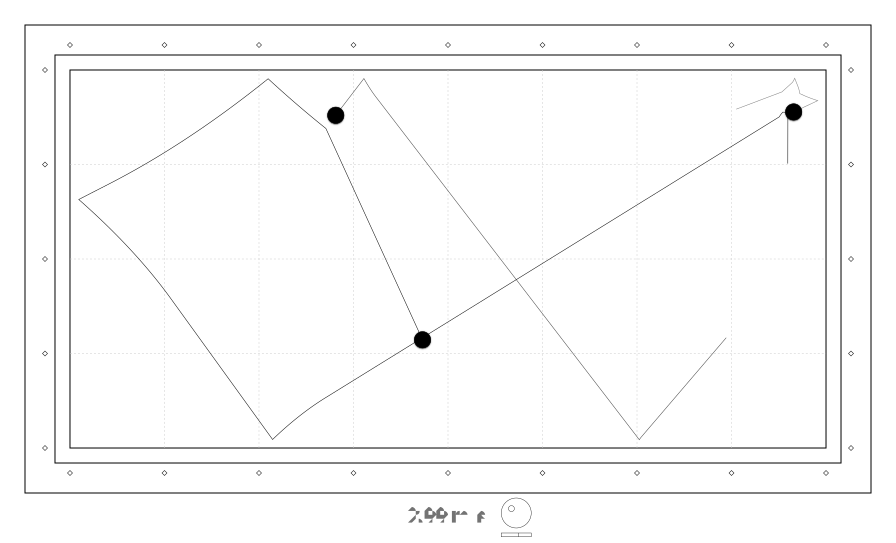
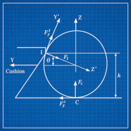

인터랙티브 3쿠션 샷 분석과 연습
이 도구는 예상 경로를 한 줄 그려 보는 것보다 훨씬 자세하게 3쿠션 샷을 들여다볼 수 있게 해 줍니다. 배치를 세우고 샷을 고른 뒤, 조준과 당점, 힘, 큐 기울기를 조금씩 바꾸면서 결과가 어떻게 달라지는지 확인해 보세요. 당구대 옆 분석 패널에는 원래 샷 주변의 성공·실패 변형이 함께 나타납니다. 수구(흰공) 면에 펼쳐진 당점 산포와 조준·힘·큐 기울기의 허용 범위 막대를 보면, 이 샷이 기술의 어느 부분에 가장 민감한지 바로 알 수 있습니다.
핵심 아이디어: 이 3쿠션 샷은 얼마나 민감한가?
어떤 샷은 여유가 큽니다. 조준이나 힘이 조금 달라져도 결과는 성공입니다. 반대로 어떤 샷은 극도로 민감합니다. 당점이나 두께, 힘이 아주 조금만 달라져도 수구는 전혀 다른 곳으로 갑니다.

샷 분석으로 이 민감도를 직접 확인할 수 있습니다. 배치는 그대로 두고 조준만 조금씩 옮겨 보세요. 다음에는 힘을 바꿔 봅니다. 그다음 당점이나 큐 기울기를 바꿔 봅니다. 각 변화가 경로를 어떻게 바꾸고 성공 여부를 어떻게 가르는지 분석이 그대로 보여 줍니다.
실제 당구대에서 이 샷을 칠 때 무엇을 조절해야 하는지 이해하는 실용적인 방법입니다.
답만 보지 말고 샷 전체를 보세요
분석 패널은 샷과 그 주변의 변형을 함께 보여 줍니다. 초록은 득점한 변형, 빨강은 실패한 결과이고, 흰 표시는 지금 샷이 놓인 자리입니다. 산포는 이것을 수구 면 전체에 펼쳐 보여 줍니다. 좌우는 사이드스핀, 위아래는 밀어치기와 끌어치기이며, 각 막대의 흰 눈금은 원래 샷의 값입니다.
결과는 사실상 이 샷의 허용 범위 지도입니다. 어디까지가 성공 구간인지, 이상적인 샷에서 벗어날수록 결과가 얼마나 빨리 달라지는지 볼 수 있습니다. 한 번에 하나의 표시만 전체 스캔되므로, 막대에서 표시를 선택하면 산포 대신 그 항목의 1차원 스캔이 나타납니다. 평가한 모든 변형은 CSV로 내려받을 수 있습니다.
무엇을 조절해야 하는지 배우기
조준 오차 (공 폭 단위)
샷이 더 이상 들어가지 않을 때까지 고스트볼 라인을 얼마나 옮길 수 있는지 공 폭 단위로 보여 줍니다. 좌우 표시는 당구대 방향과 맞춥니다. 아주 정밀한 정렬이 필요한 샷과 조준이 조금 어긋나도 되는 샷을 구분하는 데 도움이 됩니다.
당점 (사이드 · 밀어치기/끌어치기)
수구 면 전체에서 사이드스핀과 밀어치기, 끌어치기가 결과를 어떻게 바꾸는지 살펴봅니다. 한 가지 당점을 외우기보다, 쓸 만한 결과가 나오는 당점의 범위를 직접 찾아보세요.
힘
이 배치가 힘에 얼마나 민감한지 시험합니다. 어떤 샷은 정확한 힘으로 정해진 지점에 도착해야 하지만, 어떤 샷은 훨씬 넓은 범위에서 성공합니다.
큐 기울기
수평에 가까운 큐부터 세워 든 큐까지, 큐 기울기 변화가 경로와 결과에 미치는 영향을 확인합니다. 기울기가 기술의 중요한 부분인 샷에 특히 유용합니다. 큐 기울기 막대에서 표시를 선택하면 큐 기울기 조절도 함께 열립니다.
연습을 공부로 바꾸기
이 시뮬레이터는 자신의 3쿠션을 위한 실험실입니다. 경기에서 나온 흥미로운 배치를 찾아 그대로 다시 세우고 파고들어 보세요. 다른 방법을 시도하고, 조준과 당점, 힘의 성공 범위를 찾습니다. 그리고 결과를 다이어그램으로 저장해 두면 나중에 다시 꺼내 볼 수 있습니다.
"이 샷을 쳐라"는 말을 그대로 받아들이는 대신, 왜 들어가는지, 조금 어긋나면 어떻게 되는지 직접 확인할 수 있습니다.

가르치고 나눌 다이어그램 만들기
샷 배치는 자신의 노트나 연습 자료, 당구 글을 위한 다이어그램으로 만들 수도 있습니다. 다이어그램 내보내기는 분석한 배치를 깔끔한 SVG 그림으로 바꿔 줍니다. 어떤 크기로 키워도 선명한 벡터 이미지라 페이지에 바로 넣거나 연습 폴더용으로 인쇄할 수 있습니다.
그래서 이 시뮬레이터는 샷을 연습하는 데만 쓰이는 게 아니라 3쿠션 지식을 만들고 나누는 데에도 쓰입니다. 교사와 블로거, 커뮤니티 사용자, 연구자까지 쓰임이 넓어집니다.

당구대에서 연습 노트로
쓸모 있는 배치는 한 번 치고 사라질 필요가 없습니다. 샷을 분석하고 알아낸 것을 기록한 뒤, 결과 다이어그램을 다음 연습의 참고 자료로 쓰세요. 실전에서 나온 난구, 장장장단 같은 시스템 배치, 더 이해하고 싶은 샷까지 자신만의 배치 모음을 만들 수 있습니다.
목표는 실제 당구대 연습을 대신하는 것이 아닙니다. 연습과 연습 사이의 시간을 더 쓸모 있게 만들어, 샷을 실험하고 그리고 생각해 볼 수 있게 하는 것입니다.
더 깊이 들어가고 싶은 분께
이 시뮬레이터는 공과 쿠션, 마찰, 회전의 물리 모델을 바탕으로 합니다. 그래서 정지된 그림만으로는 답하기 어려운 질문을 다룰 수 있습니다.
- 힘을 줄이면 경로는 얼마나 달라지는가?
- 샷이 목적구에 더 이상 닿지 않을 때까지 사이드스핀을 얼마나 줄일 수 있는가?
- 조준은 얼마나 정확해야 하는가?
- 이 샷의 어려운 부분은 실제로 어떤 값 때문인가?

샷 값을 바꿔 가며 다시하기로 결과를 확인해 보세요.
샷을 넣는 것만으로는 연습이 아닙니다
좋은 연습 도구는 무엇을 연습해야 하는지 알려 줍니다. 허용 범위가 좁은 샷은 정밀함이 중요하다고 말해 줍니다. 허용 범위가 넓은 샷은 기술의 다른 부분에 집중해도 된다고 알려 줍니다.
사이트의 3쿠션 시험과 연습 모드와 함께 쓰면, 샷 분석은 샷 치기 → 분석하기 → 연습하기 → 스스로 시험하기로 이어지는 일관된 흐름을 만들어 줍니다.